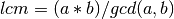

Utils¶
-
utils.lcm(a, b)¶ - Returns the least-common-multiple (LCM) of a and b as

-
utils.makeVLine(v)¶ Returns a list of [x,y] series for plotting a vertical line.
Parameters: v (list) – A list of values of the form:
[ <bottom x location>, <bottom y location>, <height> ]
-
utils.makeHLine(h)¶ Returns a list of [x,y] series for plotting a horizontal line.
Parameters: h (list) – A list of values of the form:
[ <left x location>, <left y location>, <length> ]
-
utils.getIndexContainingTime(p, t)¶ Get the index of a
networkProfile.ProfileEntrywhich contains time tParameters: - p (list) – a list of
networkProfile.ProfileEntryobjects describing the profile - t (double) – time value for indexing
- p (list) – a list of
-
utils.getDataAtTimeFromProfile(p, t)¶ Get the data at the given time t from a list of
networkProfile.ProfileEntryParameters: - p (list) – a list of
networkProfile.ProfileEntryobjects describing the profile - t (double) – time value
- p (list) – a list of
-
utils.getTimesAtDataFromProfile(p, d)¶ Get a list of times at which the profile described by p matches the data value d
Parameters: - p (list) – a list of
networkProfile.ProfileEntryobjects describing the profile - d (double) – data value
- p (list) – a list of
-
utils.calcDelay(required, output)¶ Compute the maximum horizontal distance between two profiles. Return it as a form:
[ <time at the start of the delay>, <data value which experiences the delay>, <length of delay> ]
Parameters: - required (list) – a list of
networkProfile.ProfileEntryobjects describing the required profile - output (list) – a list of
networkProfile.ProfileEntryobjects describing the output profile
- required (list) – a list of
-
utils.get_intersection(p11, p12, p21, p22)¶ Simple function to get a intersection of two lines defined by their endpoints
Parameters: - p11 (double) – x value of point p1
- p12 (double) – y value of point p1
- p21 (double) – x value of point p2
- p22 (double) – y value of point p2